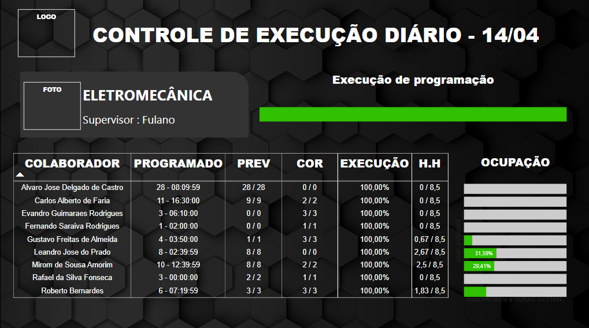
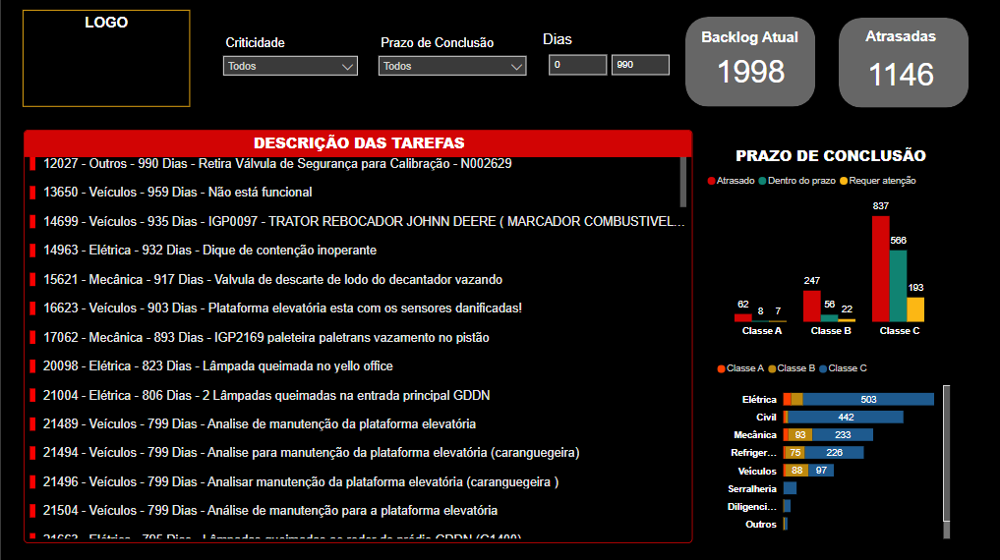
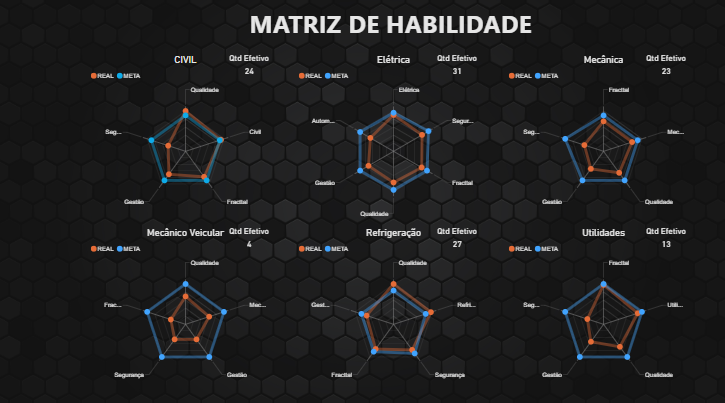
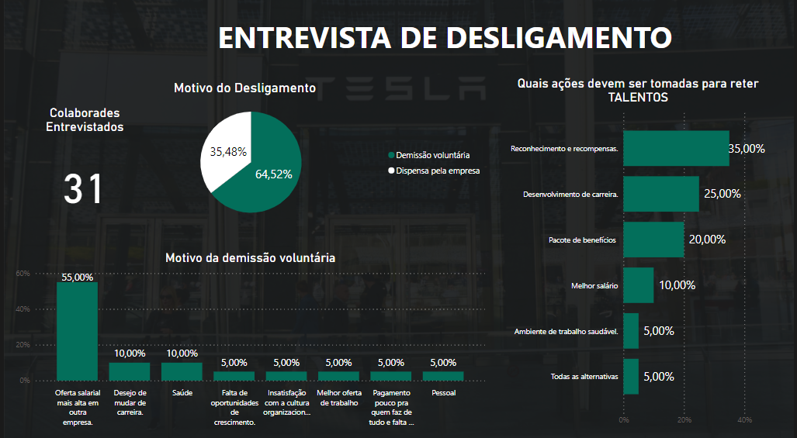
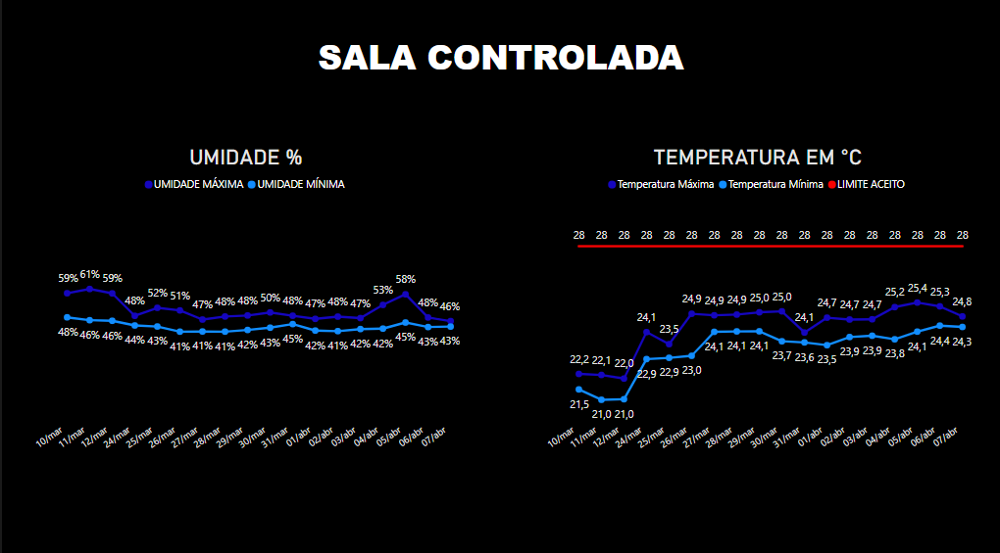

Veja meus principais projetos em Power Bi.
Clique no projeto para interagir com os dashboards

Painel Desenvolvido para acompanhar o atendimento aos chamados corretivos de manutenção. Alertando sobre os itens crítico A não tratados e informando o status dos demais itens separando-os por criticidade, discpilina e atrasados.

Dashboard Desenvolvido para identificar forças e fraquezas da equipe operacional. Foi utilizado como DataBase, um forms preenchido com as habilidades e expectativas de cada funcionário e função. Projeto completo de Business Intelligence

Painel de vizualização de dias sem acidente nas filiais da empresa, com a indicação no mapa de onde se encontra cada planta

Dashboard para acompanhar a PRODUTIVIDADE de cada membro da equipe, os KPI's que formam essa produtividade, e a evoluação por equipe durante o período escolhido

Dashboard completo com detalhamento de cada atividade de manutenção corretiva, para tratamento especifíco de cada ordem de serviço, e identificação de GAPs
Painel com o resultado de uma pesquisa feita pelo forms, com design amigável e completo